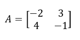
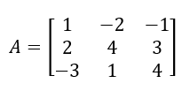

Pengertian Matriks
Matriks adalah susunan bilangan-bilangan berbentuk persegi panjang yang diatur dalam baris atau kolom dengan dibatasi kurung. Bilangan yang tersusun dalam matriks disebut elemen atau unsur matriks. Umumnya, matriks berada di dalam tanda kurung dan dinyatakan sebagai huruf kapital. Baris adalah susunan bilangan-bilangan yang mendatar (horizontal), sedangkan kolom adalah susunan bilangan-bilangan yang tegak (vertikal).
Ordo Suatu Matriks
Ordo matriks disebut juga dengan ukuran matriks. Misalnya matriks berordo 2 x 2, maka matriks tersebut berukuran 2 baris dan 2 kolom. Begitu juga dengan matriks berordo 3 x 3, maka matriknya berukuran 3 baris dan 3 kolom.
Contoh :
|
Ordo 2 x 2  |
Ordo 3 x 3  |
Operasi Sebuah Matriks
- Ada 3 macam pengoperasian pada matriks, yaitu :
- Operasi Penjumlahan Matriks
- Operasi Pengurangan Matriks
- Operasi Perkalian Matriks
1. Operasi Penjumlahan Matriks
Penjumlahan matriks memiliki syarat yaitu apabila matriks akan dijumlahkan maka kedua matriks tersebut harus memiliki ordo yang sama. Hasil penjumlahan matriks diperoleh dengan menjumlahkan elemen-elemen yang seletak.
Berikut merupakan cara penyelesain penjumlahan matriks :

2. Operasi Pengurangan Matriks
Pengurangan matriks memiliki konsep yang sama seperti penjumlahan yaitu kedua matriks harus memiliki ordo yang sama. Hasil pengurangan matriks diperoleh dengan mengurangkan elemen-elemen yang seletak.
Berikut merupakan cara penyelesain pengurangan matriks :
3. Operasi Perkalian Matriks
- Ada 2 cara pengerjaan perkalian matriks, yaitu :
- Perkalian Skalar
Pada operasi perkalian skalar, sebuah matriks dikalikan dengan bilangan skalar. Jika diketahui A merupakan suatu matriks dan K merupakan bilangan real, maka hasil perkalian K dengan matriks A adalah matriks yang diperoleh dengan mengalikan setiap elemen A dengan K.
Berikut merupakan cara penyelesain perkalian saklar pada matriks :
- Perkalian Dua Matriks
Berbeda dengan perkalian skalar yang hanya mengalikan setiap elemen matriks dengan bilangan skalar, perkalian dua matriks memiliki aturan tersendiri. Syarat dua buah matriks, misal matriks A dan matriks B, dapat dikalikan adalah jika banyaknya kolom matriks A sama dengan banyaknya baris matriks B.
Berikut merupakan cara penyelesain perkalian dua matriks :